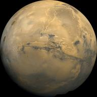

Marte

{kind=link}
Date despre Marte
- Raza ecuatoriala = 3396 km (53,25 % din raza Pamântului)
- Înclinarea ecuatoriala = 25° 12'
- Masa = 6,39 × 1023 kg (10,7 % din masa Pamântunul)
- Volum = 15 % din cel al Pamântului
- Densitatea medie = 3900 kg/m3
- Gravitatie = 0,38 g (3,7 m/s2)
- Periada de rotatie = 1,029 zile pamântesti
- Înclinarea orbitei = 1° 51'
- Viteza orbitala = 24,1 km/s
- Perioada orbitala = 1,881 ani pamântesti
Caracteristici fizice
Ziua martiana dureaza cu o jumatate de ora mai mult decât ziua terestra si este uneori numita sol iar anul martian dureaza aproape cât doi echivalenti pamântesti. Satelitii lui Marte sunt în numar de doi, numiti dupa câinii zeului Marte (Phobos si Deimos). Acestia sunt niste corpuri mici, întunecate si puternic marcate de cratere, la origine putând fi niste asteroizi captati de gravitatia Planetei Rosii. Satelitul Phobos, datorita perioadei sale de revolutie siderala mult mai mica decât perioada de rotatie siderala a planetei, are miscare aparenta de la vest spre est si rasare si apune de câte 2 ori într-o zi martiana.
Atmosfera
 Marte si-a pierdut magnetosfera acum 4 miliarde de ani, vantul solar interactionand direct cu ionosfera martiana, tinand atmosfera mai rarefiata decat ar fi in mod normal din cauza eliminarii atomilor din atmosfera superioara.
Marte si-a pierdut magnetosfera acum 4 miliarde de ani, vantul solar interactionand direct cu ionosfera martiana, tinand atmosfera mai rarefiata decat ar fi in mod normal din cauza eliminarii atomilor din atmosfera superioara.
Atmosfera ajunge pâna la 11 km, pe când, cea a Terrei la doar 6 km. Compozitia atmosferei: 95% dioxid de carbon, 3% nitrogen, 1,6% argon, continând urme de oxigen si apa. Atmosfera este prafoasa, oferind cerului martian o culoare maroniu-roscata.
Existenta metanului indica faptul ca pe planeta a existat, sau exista, o sursa de gaz. Activitatea vulcanica, impacturile cu posibile corpuri ceresti, si existenta vietii sub forma unor microorganisme, ca metanogenele, reprezinta posibile surse. În lunile de iarna, când polii sunt permanent în umbra, suprafata îngheata asa tare încât 25-30% din întreaga atmosfera se condenseaza în bucati groase de gheata din CO2.